a European Commission, Joint Research Centre, T.P. 450, I-21027 Ispra, Italy
b Centre for Renewable Energy Systems Technology, Loughborough University, Loughborough, Leicestershire LE11 3TU, United Kingdom
c Institut für Elektrotechnik, Hochschule Magdeburg-Stendal, Breitscheidstrasse 2, D-39114 Magdeburg, Germany
d Faculty of Electrical Engineering, University of Ljubljana, Trzaska 25, SI-1000 Ljubljana, Slovenia
Received 12 July 2009. Revised 26 November 2009. Accepted 3 December 2009. Available online 5 January 2010. Communicated by: Associate Editor Nicola Romeo.
A method is presented for estimating the energy yield of photovoltaic (PV) modules at arbitrary locations in a large geographical area. The method applies a mathematical model for the energy performance of PV modules as a function of in-plane irradiance and module temperature and combines this with solar irradiation estimates from satellite data and ambient temperature values from ground station measurements. The method is applied to three different PV technologies: crystalline silicon, CuInSe2 and CdTe based thin-film technology in order to map their performance in fixed installations across most of Europe and to identify and quantify regional performance factors. It is found that there is a clear technology dependence of the geographical variation in PV performance. It is also shown that using long-term average values of irradiance and temperature leads to a systematic positive bias in the results of up to 3%. It is suggested to use joint probability density functions of temperature and irradiance to overcome this bias.
Keywords
PV module performance;
Annual energy yield;
Crystalline silicon;
Copper indium diselenide;
Cadmium telluride
1. Introduction
The energy yield of photovoltaic (PV) modules depends on a large number of factors. The most important factor is the amount of solar radiation energy that arrives in the plane of the PV modules, which in turn depends on the local climatic conditions. These local conditions can be modified by the mounting approach, e.g. fixed or tracking, inclination angle, building integration, etc. Would the solar irradiance be the only parameter influencing the PV module power, the task of estimating the long-term energy performance of a system would be reduced to finding the average in-plane irradiation. A number of software tools and online resources exist to help with such a simplified estimate (
[Remund et al., 2007],
[Šúri et al., 2005],
[RetScreen home page, 0000] and [SSE, 2008]), some of which also contain more advanced yield estimation/prediction/forecasting methods.
In reality, the performance of PV modules, and thus also PV systems, is affected by a number of other important effects:
•
The temperature of the PV module which in turn depends on the ambient (air) temperature, the solar irradiance, the type of mounting, and cooling by wind.
•
The PV module energy conversion efficiency generally is a non-linear function of the irradiance level and module temperature, typically declining for low irradiances and for high temperatures.
•
The fraction of sunlight reflected away at the module surface depends on module type and on the incidence angle of the light relative to the surface. This is termed the angle-of-incidence (AOI) effect and has been the subject of a number of investigations (
[Martin and Ruiz, 2001] and [Huld et al., 2008]). This effect lowers the irradiance entering the generating layers in the solar cells of the modules and hence affects both temperature and power output.
•
Module types vary in their spectral sensitivity. Instantaneous solar spectra in turn depend on the meteorological conditions in a way that is not well understood, especially for cloudy conditions (
[Gottschalg et al., 2004] and [Gottschalg et al., 2005]).
•
For some module types the conversion efficiency depends on the history of the module. Efficiency changes with exposure to light (negatively for some module types, such as amorphous silicon (a-Si), positively for other types, such as Copper–Indium–Diselenide (CIS) and Cadmium Telluride (CdTe). Such an effect is often termed “light-soaking”. Exposure to elevated temperatures may also affect the conversion efficiency, in particular in the annealing effect in a-Si modules which acts to counteract the light-soaking (
[del Cueto and von Roedern, 1999] and [Nikolaeva-Dimitrova et al., 2008]).
All these effects are functions of meteorological conditions which vary strongly with geographical location. Thus it can be expected that the same module will perform differently if moved from one place to another with a different climate, in a way that is not simply a linear function of irradiation.
Different PV technologies are affected by these effects to varying degree, depending on material system and device design. Crystalline silicon (c-Si) is generally more sensitive to temperature than the various thin-film technologies. Amorphous silicon has the most restricted spectral sensitivity, with CdTe somewhat less sensitive to spectral changes and c-Si and CIS the least affected. Most thin-film technologies are to some extent affected by light-soaking, but this is only of significance for long-term outdoor system operation for amorphous silicon devices. Equally, amorphous silicon is the only material affected significantly by thermal annealing.
The ability to estimate, or model, the performance of PV systems requires a mathematical model for locations where no actual measured performance data exist. Further, the necessary input data for the model is required. These data in turn must include measured data on the technology, or even better on the technology, solar cell type and design, in order to determine the empirical coefficients required for the model. This makes it possible to calculate the energy yield for a given location if the climatic data are known. No estimates can be made in the absence of adequate models, if the models applied have not been validated for a given module type (not only the module technology), or if the necessary climatic data are not available.
The study presented here is subject to some constraints. There is a limited number of module types that can be assessed by the authors. Furthermore, the geographical region considered is restricted by the availability of climatic data. At present, the available data on solar spectra is extremely limited for non-clear-sky conditions, and therefore spectral effects are not included as using clear weather spectra would introduce a significant bias. This effect is anyway likely to be negligible for CIGS but noticeable for a-Si devices which could have an annual boost in energy production as high as 4–6% (Gottschalg et al., 2004). Wind data were also not available for this study, so the effect of wind on the module temperature will not be taken into account. This may lead to an underestimate of the PV performance in regions with strong winds, which can lead to an underestimation of less than 3% of annual energy production. This affects different materials in the order of their temperature coefficients, i.e. a-Si is affected the least and c-Si the most. However, in the majority of cases, wind data will be influenced by local effects anyway, which can result in higher or lower performance values than the ‘standard’ data depending on the details of the installation. Thus the application of wind data is only of questionable benefit to the overall system accuracy.
Models that relate the PV performance to irradiance and temperature are well developed (
[Huld et al., 2008],
[King et al., 1998],
[King et al., 2004],
[Kenny et al., 2003],
[Friesen et al., 2007],
[Guérin de Montgareuil, 2007],
[Heydenreich et al., 2008] and [Topič et al., 2006]). The spectral sensitivity of PV modules is also generally well known and is reflected by the energy bandgap of solar cell absorber layer(s) used. However, other effects are less well studied. Despite some recent advances (Nikolaeva-Dimitrova et al., 2008), it is not yet certain if the mechanisms of light-soaking and annealing in a-Si are understood well enough to improve modelling accuracy and thus any model will be affected by a very significant uncertainty on the energy yield. For this reason, a-Si based devices are excluded from the geographical mapping of performance presented in this work.
A further limitation of the modelling approach is the continuous development of PV technologies including new types and designs. The models used here have mainly been validated using modules that have seen several years of field exposure. By this very fact, they will behave slightly differently than today’s modules as especially thin films are experiencing a very rapid development with very short innovation cycles. A recent study (Huld et al., submitted for publication) demonstrated for c-Si devices that their performance is relatively uniform over a large range of modules produced over the last 10 years. Other PV technologies are maturing rapidly but no similar study has been made to demonstrate that recently produced devices of a given technology follow the same performance patterns as modules that are a few years old. This results in a chicken-and-egg situation, as several years’ worth of outdoor operation are required to validate a model but by this time devices production will have advanced significantly which may result in varying performance characteristics. Typically one would expect significant variations within one material class which are easily in the same order of magnitude as the differences of the averages of the technologies. Such a study has been presented by Vorasayan et al. (2006) for a-Si technologies and it may well be that the same conclusion can be drawn for other technologies.
In this work CIS and CdTe modules are modelled to demonstrate the performance of these modules across Europe. However, as pointed out above, it should be borne in mind that the applied model fits today’s technologies less well than the more established c-Si technology. Thus one should not generalise the findings of this study blindly to all modules of a given technology.
A number of studies exist on the geographical variation of PV performance, see for instance (
[Huld et al., 2008],
[Bücher, 2001] and [Topič et al., 2007]). However, some of these have been limited to a few geographical locations, and the studies have mainly addressed crystalline silicon modules. The present study uses some of the methods described in Huld et al. (2008). However, the previous study was limited by the use of long-term averaged data for irradiance and temperature, and only considered crystalline silicon modules. The aim of the present study is to refine this analysis by assessing the effect of using long time series of instantaneous data instead of averaged data, and by extending the analysis to some thin-film PV technologies. It is also attempted to explain the differences in performance, which highlights the need for a standardised and localised energy rating to give PV developers information for the initial design phases of a PV installation.
2. Data availability
Temperature and irradiance data are available from 664 sites throughout Europe ranging from longitude 25°E to 10°W and latitude 36°N to 63°N. The time period for the data is the 11-year period 1996–2006 (in the Western Balkans the time period is restricted to 1998–2006). Temperature data are available at 3-h intervals from 6:00 GMT to 18:00 GMT (5 values per day). Irradiance data are available as hourly averages, based on satellite images with a spatial resolution of 5–10 km depending on the location (coarser towards north). The irradiance values were calculated from satellite images using the methods described in
[Hammer et al., 1998] and [Lorenz, 2004].
A linear interpolation needs to be employed to match the time interval of the temperature measurements to that of the irradiance values, as the temperature is measured every 3 h while the irradiance is available in hourly steps. In the relatively few cases where radiation data are available outside the 6:00 GMT to 18:00 GMT interval, the temperature is assumed to be constant before 6:00 GMT and after 18:00 GMT.
3. Methodology
3.1. Model for the energy performance of PV modules
The model used in the following is a modified version of a model suggested by
[King et al., 1998] and [King et al., 2004]. In this model the power output depends only on the module temperature Tmod and the in-plane irradiance G:
(1)
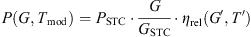
where PSTC is the power at standard test conditions (STC) of GSTC= 1000 W/m2 and Tmod_STC = 25 °C. The instantaneous relative efficiency, ηrel is given by:
and G′ and T′ are normalized parameters to STC values G′≡G/GSTC and T′≡Tmod-Tmod_STC
The coefficients k1–k6 must be found by fitting the model to experimental data measured at one or more test sites.
The instantaneous relative efficiency depends on the instantaneous irradiance and module temperature Tmod. Under steady-state (or slowly changing) conditions the Tmod can be estimated from the ambient temperature and the irradiation in the following way:
(3)
Tmod=Tamb+cTG
The coefficient cT describes how much the PV module is heated by the solar radiation. It depends strongly on the way the PV module is mounted (free-standing rack, ventilated or unventilated roof mounting, etc.), and also slightly on the module type. In addition, Tmod is affected by the regime of operation. In our study a continuous maximum power point tracking is assumed.
3.2. Estimate of inclined-plane irradiation from long-term average irradiation data
The PVGIS method has been described in a number of publications (
[Šúri et al., 2005] and [Šúri and Hofierka, 2004]) and only a brief outline will be given here. The method calculates the monthly and annual energy output from a PV system with a fixed mounting or with a sun-tracking mounting. The calculation of the instantaneous PV power is made using monthly averages of the global and diffuse horizontal irradiation as well as monthly average values of the Linke turbidity used to estimate the clear-sky irradiation. The irradiation during a typical day in month m is then calculated as a numerical integral over the day (from sunrise to sunset) of the average instantaneous irradiance. For a given location (latitude and longitude) this takes the form:
(4)
Hm=∫G(kb,m,kd,m,TL,m,θ,γ,t)dt
Here kb,m and kd,m are the beam and diffuse coefficients for month m. kb,m is given as the ratio of the real-sky beam irradiation to the clear-sky beam irradiation on a horizontal plane. kd,m has the same definition, only for the diffuse irradiation. TL,m is the monthly average Linke turbidity. θ and γ are the module inclination and orientation (angle difference from due south), respectively. These may be explicit functions of time if the system is sun-tracking. The method for estimating the clear-sky irradiance is also described in Šúri and Hofierka (2004).
The explicit dependence on the time derives from the path of the sun during the day. The integration is performed over a “typical” day in the month, as defined in the European Solar Radiation Atlas (Greif and Scharmer, 2000). The numerical time integral is done with a 15-min time interval during the time from sunrise to sunset.
The corresponding expression for the daily PV energy production is:
The ambient temperature Tm(t) is the monthly average profile of the daytime temperature as a function of time during the day (Huld et al., 2006).
3.3. Calculating the average PV efficiency
Instead of using the beam and diffuse coefficients together with the Linke turbidity in the model for inclined irradiance, it is possible to use directly the instantaneous values of beam and diffuse irradiance on a horizontal plane. Using the 3-hourly values of irradiance and temperature one can write the average of irradiance for month m and hour h as follows:
(6)
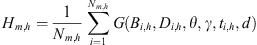
Here Nm,h is the number of measurement values in the dataset at hour h in month m.Bi,h and Di,h are the measured values of beam and diffuse horizontal irradiance at hour h. d is the day number, indicating that the calculation is made using a different sun path for each day in the month. In a similar way an expression for the PV output, Em,h can be derived.
Monthly averages of daily irradiation are found by simple addition of the hourly values. Given the time resolution, it would be more accurate to use a numerical integration such as the trapezoidal method. However, in the following the values will only be used for comparisons between different methods for averaging the data, and therefore the absolute values of the daily irradiation are of less importance, and the results are not affected by this.
Once the irradiation is averaged and the average PV output calculated from the instantaneous values, the hourly averaged relative efficiency (normalized to the STC efficiency) can be calculated as:
(7)
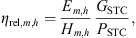
and finally also the annual average relative efficiency:
(8)
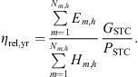
3.4. Statistical treatment
Using the methods described in Sections 3.2 and 3.3 above, it is possible to calculate the instantaneous relative efficiency. The average relative efficiency for a given time period can then be found by dividing the sum of daily energy outputs from Eq. (4) by the total irradiation over the same time period. Time series of irradiance and temperature for a given location and period allow the estimation of long-term performance.
However, there are reasons why it would be desirable to use a simpler method requiring less computation:
•
For web-based applications a full simulation of system performance using long time series of data are prohibitively expensive in terms of CPU time.
•
It is not feasible to make a spatial interpolation of the data for each time point in a long data series. For instance, the 11-year time series with 5 daily values would produce over 20,000 maps of irradiance and temperature.
For these reasons it is sometimes desirable to use a statistical representation of the full dataset of instantaneous irradiance and temperature values. This can be done in a variety of ways. Two different approaches will be investigated here:
•
use monthly average climatic conditions and reconstructing the daily radiation and temperature profiles from this,
•
use monthly average climatic conditions combined with a probability density function (PDF) of the temperature and irradiance values.
3.4.1. Reconstruction using averaged values
The method described in Section 3.3 requires the calculation of the monthly averages of kb,m and kd,m.
To do this one must find the averages of irradiances for each hour, for each month:
(9)
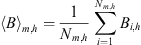
A similar equation can be derived for Dm,h. kb,m and kd,m can then be found by dividing by the estimated clear-sky irradiances for the same times during the “typical” day of the given month. The average daytime temperature profile was calculated by averaging the monthly data for each time point during the day, and then performing a polynomial fit to the five daily temperature values (Huld et al., 2006).
These values are then used in the model to calculate the PV power for a given time during the day for a given month:
where Gm,h is the in-plane irradiance calculated from the averaged values kb,m and kd,m for the given time th and day dh.
Any calculation using averaged values is likely to be inaccurate for two different reasons. One reason is that the model for PV performance is non-linear in irradiance and temperature. Especially the averaging of high and low irradiances will lead to errors. The other reason is that irradiance and temperature tend to be correlated for a given time during the day. For instance, in summer the ambient temperature tends to be higher when the sun is shining than when it is not. For these reasons it is to be expected that there will be systematic errors in the calculation of PV performance when averaged values are used for the calculation of the relative efficiency. Huld et al. (2008) reported that the estimated relative efficiency for crystalline silicon was about 1.3% higher when using averaged values than when using instantaneous values of irradiance and temperature, though this investigation was only done for one location.
3.4.2. Reconstruction using probability density functions
In order to overcome the problem with averaging, while still using a statistical representation for saving computation time, a different approach was developed using probability density functions (PDF). The probability density function P(G,T) of the stochastic variables G and T can be defined as:
(11)
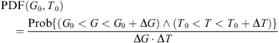
Since the expected temperature and irradiance vary strongly during the day the PDF depends on the month and on the time of day. To produce a PDF that is independent of the time of the day, a different set of variables is used:
(12)
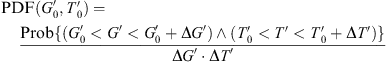
(13)
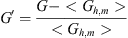
(14)
T′=T-<Th,m>
where < Gh,m> and < Th,m> are the average values of G and T at the time th at which G and T are measured. In other words, G′ and T′ represent the deviation of a given measurement from the average value at that time of the day for the given month.
The PDF is in principle a continuous function of the stochastic variables. In practice the PDF is found by sorting the instances of G′ and T′ into a number of bins and constructing the PDF as a discrete function of G′ and T′. The result is one PDF for each month for each site.
Once the PDF has been calculated, the total energy produced by a PV module at a given site can be estimated as:
(15)
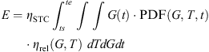
where the integration is performed over the extent (in G and T) of the PDF.
The discrete version of the PDF is calculated for each month in the year, using all the available data measured during the given month over the 11 year time period for which data are available. First the variances of the temperature and irradiance are calculated for each of the measurement times during the day:
(16)
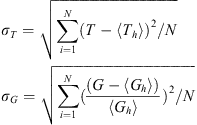
The individual measurement results are then sorted into bins with a width measured in terms of the variances of G and T. Choosing bins of a size of kσT × kσG and centering these around the average values yields (2M + 1) × (2M + 1) bins Eq. (10) can be written in discrete form as:
(17)
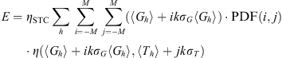
3.5. Spatial interpolation
The temperature and irradiance data are known for a number of discrete points (see Section 2). When the methods described above are applied to calculate the relative efficiency of PV modules, the result will automatically yield values for the monthly or annual averages of ηrel at these discrete points. A spatial interpolation using the module v.vol.rst from the open-source Geographical Information System GRASS (Neteler and Mitasova, 2007) was performed in order to estimate ηrel for other locations. This method performs a 3D spline interpolation with tension (Mitasova and Mitas, 1993). The methods were applied in a manner described elsewhere (
[Šúri et al., 2005] and [Šúri et al., 2007]). The resulting maps of relative efficiency have a spatial resolution of 1 km × 1 km. This resolution is much higher than the density of the discrete dataset, but in this way it is possible to better resolve the variation with altitude.
4. Results and discussion
4.1. Modelling the annual energy yield for crystalline silicon modules
The method described in the previous section depends on a number of input parameters that must be determined from experimental data. These are named PSTC and k1–k6 in Eqs. (1) and (2). The values of the coefficients k1–k6 were obtained from indoor measurements of irradiance–module temperature–power matrices, typically consisting of seven irradiances between 100 and 1000 W/m2 and four temperatures between 25 °C and 60 °C). Data from 16 different types of modules measured at JRC Ispra were used for this study. The modelling algorithm consists of the following steps:
1.
For each module, the indoor measured data were fitted to Eqs. (1) and (2) using a least-squares fitting procedure to find the best values for the model parameters. This gives values for PSTC and k1–k6 for each module.
2.
Each dataset was then rescaled by dividing the measured power values by the PSTC value found from the fitting procedure. This is the equivalent of having measurements of a module with the same irradiance and temperature behaviour as the original module, but with a nominal power of PSTC = 1 W. In this way, for each module we have P(G,Tmod)/PSTC = G′ ηrel(G′,T′) (see Eq. (1)).
3.
The data from the various modules were then pooled into a single dataset by choosing an approximately equal number of measurements from each module.
4.
A least-squares fit to the function from Eq. (2) was then made using all the rescaled data from the modules in order to produce a single set of coefficients for Eq. (2). The values of the model coefficients obtained in this way are given in Table 1.
Table 1.
Values of the coefficients used in the model for c-Si modules (Eq. 2).
Using a long-term outdoor dataset consisting of simultaneous values of irradiance and module temperature, it was found that the output energy predictions for the individual modules differed from the energy prediction of the generic model with a relative standard deviation of 1.4% based on a full year’s outdoor dataset with irradiance and module temperatures from Ispra, Italy. Assuming a normal distribution in this deviation, this means that there is a 90% probability that an arbitrary c-Si module will deviate less than 2.3% from this model for generic c-Si modules. Since the largest differences between modules are found at low irradiance, the difference in performance will be higher in regions with a higher probability of low-irradiance conditions. This is shown in Table 2 which shows the relative standard deviation of the predicted outputs for the modules in question for five different locations in Europe. The uncertainty generally increases with increasing latitude due to the more cloudy climate and higher probability of low irradiance where the differences between modules are greater.
Table 2.
Standard deviation between the modelled output of the c-Si modules used for this study using long-term outdoor datasets of irradiance and temperature. The numbers are expressed as the annual average relative efficiency for each module and location.
It should be noted that this does NOT mean that the measured performance variations between c-Si modules will be this small if measured under realistic outdoor conditions. These values are based on comparison between measurement values for the given modules that are obtained using solar simulators under well-controlled conditions, so they do not include the uncertainty in the nominal power of modules, nor the uncertainty in the outdoor measurements of irradiance, temperature and module power.
Based on measurements performed at JRC Ispra, the temperature coefficient of the c-Si module was set to cT = 0.035 °C W−1 m2. This value is applicable to a free-standing rack-mounted module in the absence of wind.
Applying the model to the instantaneous data for Europe yields a set of annual average relative efficiency values, one for each measurement site. A 3D interpolation is then used to obtain a map of average relative efficiency. Fig. 1 shows the annual average relative efficiency ηrel,yr of the modelled c-Si module in a free-standing rack-mounted installation facing South with an inclination of 40°. The underlying coefficients are those given in Table 1. This inclination was chosen because it is fairly close to the optimum angle for the area studied (Šúri et al., 2005). The interpolation has been made over the entire area shown in Fig. 1, but areas over sea and areas perceived as being too far away from measurement points (more than 150 km), have been removed from the image.
Fig. 1. Relative annual average efficiency, expressed as a percentage of the STC efficiency, modelled for a c-Si module as calculated from the instantaneous datasets and spatially interpolated. The fixed inclination angle is 40° facing south. The crosses show the locations of the meteorological data stations used as input for the interpolation.
Generally, the annual relative efficiency decreases with decreasing latitude, mainly due to the increase in temperature when moving south. In Central Scandinavia and in Ireland and Scotland, the value is around 92–93% of the STC efficiency. This decreases to 90–91% in Germany and France and further to 87–89% in Southern Spain and Northern Africa. The exception to this trend is found in the mountains, especially in the Alps, where high altitudes are associated with high irradiances and simultaneously with low temperatures. At high altitudes ηrel,yr may reach values of 95–97%.
The result in Fig. 1 was obtained using the temperature correlation for free-standing rack-mounted modules. The behaviour might be different for building-integrated systems, which operate at elevated temperatures. Here roof-integrated systems are investigated. In these systems, the module temperature increases more rapidly with irradiance, and the relative efficiency will therefore be different. The calculation was repeated with a value for cT = 0.05 °C W−1 m2, corresponding to a building-integrated system. (King et al., 2004). Fig. 2 shows the difference in annual average relative efficiency for the two configurations. Generally speaking, the annual relative efficiency is lower for building-integrated systems, ranging from Δηrel,yr ≈ −2.5% in the British Isles to almost −5% in Southern Europe and Northern Africa.
Fig. 2. Difference in relative annual average efficiency between roof-integrated modules and free rack-mounted crystalline silicon modules, using the same method and assumptions as for Fig. 1. The difference is expressed in percentage points.
It is to be expected that there would be a difference in the annual average relative efficiency ηrel_yr if averaged climatic data are used instead of the instantaneous data used for Fig. 1. A comparison between the two approaches is shown in Fig. 3. This figure shows the difference in annual average relative efficiency between the use of average values and instantaneous values, in percentage points:
(18)
Δ=(ηrel(〈G〉,〈T〉)-〈ηrel,yr(G,T)〉)·100%
Fig. 3. Difference between the relative annual efficiency as calculated using averaged irradiation and temperature values and as calculated from the instantaneous dataset, in percentage points.
It is apparent from Fig. 3 that the averaged values of climatic data overestimate the output of the PV, though the magnitude of the error varies. In Southern Europe, this overestimation is generally about 1.5%. For Northern Europe the difference is about +2.0 to +2.5% while for some regions in Central Europe the difference may exceed +3%. The reason for this geographical variation is not clear and is under investigation.
4.1.2. Estimates using probability density functions
Section 3.4.2 described a method for calculating a discrete PDF for the meteorological data as a function of irradiance and temperature. The number of bins in the discrete PDF is given by the extent of the PDF in G and T, and in the width of each bin, measured in terms of the variances σT and σG. The effect of the number and width of the bins was investigated by performing the long-term calculation of ηrel for all stations using instantaneous values and using the PDF, with varying number of bins. The deviation between the calculation using instantaneous values and one using a PDF was then determined using the variance of the two sets of calculations:
(19)
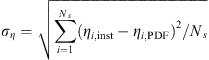
where ηi,inst is the annual average relative efficiency for the i-th station using instantaneous values and ηi,PDF is the corresponding value calculated using the PDF.
The results of this investigation are shown in Table 3 for different values of k and M (see Eq. (12)).
Table 3.
Values of ση as defined in Eq. (16), using PDFs calculated with different values of M and k, expressed in percent.
As a comparison, the variance between values of η calculated using purely averaged data is ση = 2.24%, meaning that on average the relative efficiency is overestimated by about 2.5% when using averaged values (the relative error is ση/<ηrel>). In contrast, as shown in Table 3, the error is much smaller when using the PDF. When M·k= 1 the PDF only stretches 1.5σ from the averaged values and the error is still around 1%. However, the error is less than 0.5% as soon as M·k ⩾ 2 and using a wider PDF enhances the results only slightly. It seems that a good compromise is a PDF with M= 2 and k= 1. This will have (2M + 1) × (2M + 1) = 25 bins + two values for the variances in G and T, for a total of 27 values per month per location.
4.2. Mapping of PV performance for thin-film technologies
The previous discussion has been made using only the results from a simulation of the performance of crystalline silicon modules. For other PV technologies the behaviour is expected to be different.
Some PV technologies have properties that make them qualitatively different from c-Si in terms of energy yield prediction (Topič et al., 2007).
This paper focuses on modules of CuInSe2 and Cu(In,Ga)(Se,S)2 (in the following called CIS), and cells made from CdTe. These materials have good long-term stability. CIS has a spectral sensitivity that is very similar to that of c-Si but will have a slightly higher or lower cut-off wavelength, depending on the indium to gallium ratio (and thus the achieved band gap within the material). The spectral response of CdTe is somewhat more restricted in the near-infrared. For CIS/CIGS it is therefore a good assumption that the performance can be adequately described by Eqs. (1) and (2). The situation of CdTe is somewhat less well understood, as typically the absorption in the blue region of the device is affected by the CdS window layer, which absorbs significantly in the UV/blue part of the spectrum but does not contribute to the overall current generation. Typically one cannot identify spectral gains for CdTe and thus the assumption that Eqs. (1) and (2) describe CdTe with sufficient accuracy seems reasonable.
The coefficients for CIS were obtained from measurements of three modules from two different manufacturers during a 4-month outdoor measurement campaign at the JRC Ispra, from May to September 2007, as part of the BIPV-CIS project (BIPV-CIS project homepage: http://www.bipv-cis.info.). The measurements were used to fit the coefficients of Eq. (2) in a manner similar to that described for c-Si in Section 4.1. The coefficients for CdTe were also fitted from outdoor measurements, in this case three different modules from the same manufacturer, using data measured at Widderstal, Germany, Wrocław, Poland, and Ispra, Italy. The first two measurement campaigns lasted 1 year, while the Ispra module has been measured for 8 months, covering both winter and summer conditions. In all cases, the irradiance data were corrected for angle-of-incidence effects using the model by Martin and Ruiz (2001).
The coefficients obtained for CIS and for CdTe are presented in Table 4.
Table 4.
Values of the coefficients used in the model for CIS and for CdTe (Eq. 2).
It should be noted that this part of the study uses data from a much smaller sample of modules of different types than the study of c-Si described in the previous section. The CdTe data come from modules made by a single manufacturer, and should thus not be generalised to modules from all manufacturers. Furthermore, both technologies are continuously improving, and significant variations are known in each technology class. Thus the following results should be seen as an indication of the performance of each technology, not a generalised description.
The performance variation within the modules in this study was investigated by applying the performance model for each module to datasets of irradiance and temperature of a number of locations to obtain performance estimates for each module at the given locations. The results for each module were then compared with the estimate from the “combined” model for each technology. The results are shown in Table 5 for CIS and in Table 6 for CdTe.
Table 5.
Variation between the modelled output of the CIS modules used for this study. The numbers are expressed as the annual average relative efficiency (% of STC efficiency) for each module and location.
Table 6.
Variation between the modelled output of the CdTe modules used for this study. The numbers are expressed as the annual average relative efficiency for each module and location.
The variation between modules is quite modest. The variation between the CIS modules is lower than for the CdTe modules. However, given the quite small overall level of variation, this variation may well be due to uncertainties in the measurements rather than any real difference between the technologies. The modest variation also indicates that the results of this study might actually be of more general applicability than expected.
Fig. 4 shows the relative efficiency for all three technologies as a function of irradiance for a single temperature, and as a function of temperature for a single irradiance. Here it is clearly seen that the behaviour of CdTe is somewhat different from the two other technologies, with a marked peak in efficiency at around 400 W/m2. Also notable is that the low-light performance of CIS is poorer than that of crystalline silicon. The temperature dependence of efficiency depicted in Fig. 4 exhibits the expected behaviour of decreasing performance with increasing temperature. It is clearly seen that the temperature induced performance losses of c-Si are more significant than for the other two technologies.
Fig. 4. (a) Relative efficiency of the three PV technologies as functions of irradiance for a constant module temperature of Tmod = 40 °C. It is clearly seen that CdTe behaves differently from the other technologies, with a marked peak in performance around G= 400 W/m2. (b) Relative efficiencies as a function of module temperature for a constant irradiance of G = 800 W/m2. The faster degradation of c-Si performance with temperature is clearly seen. Note the different scales on the two graphs.
Using the coefficients in Table 3 for both CIS and CdTe modules, the overall annual relative efficiency was calculated for the same geographical region as that shown in Fig. 1, again using the full datasets of instantaneous values. The results are shown in Fig. 5 and Fig. 6 as the difference in relative efficiency between these two PV technologies and that of crystalline silicon.
Fig. 5. Map of difference in relative efficiency between CIS and c-Si, in percentage points. All calculations were made using the assumption of a free-standing rack mounting.
Fig. 6. Map of difference in relative annual efficiency between modules made from CdTe and c-Si given in percentage points. All calculations were made using the assumption of a free-standing rack mounting. Note that the colour scale is different from that used in Fig. 5.
In both cases the relative efficiency of the thin-film technologies is higher than that found for crystalline silicon. However, where CIS shows a modest advantage of 1–2% (higher in the south), CdTe presents a larger difference, in the range 10–12% higher except in the mountains, where the performance advantage is reduced to 6–7%.
For CIS the main difference with respect to c-Si is that the reduction in performance with temperature is somewhat lower, with a gradient of approximately −0.35%/°C at G= 800 W/m2 and Tmod = 45 °C compared to −0.45%/°C for c-Si at the same irradiance and temperature. The negative temperature coefficient is even smaller for CdTe (−0.2%/°C at G= 800 W/m2 and Tmod = 45 °C), but this alone cannot explain the difference. Instead, for the main difference between the two technologies is the different shape of the relative efficiency function as seen in Fig. 4. It is clearly seen that CdTe has a higher conversion efficiency at moderate irradiance (around 500 W/m2) than at 1000 W/m2, unlike c-Si which has the highest efficiency at the highest irradiance.
4.3. Relative importance of irradiance and temperature effects
As Eq. (2) shows, the PV conversion efficiency depends on both temperature and irradiance effects. Some of the terms are non-linear in the two independent variables, and therefore it is not possible without further analysis to specify the magnitude of the variation in each contributes to the overall effect.
In order to quantify the losses caused by each effect, one of the two variables is fixed to its STC value (G= 1000 W/m2, Tmod = 25 °C) and the other varies according to the real environment. This is equivalent to setting some of the coefficients of Eq. (2) to zero. To force G = 1000 W/m2, k1 = k2 = k4 = k5 = 0, while for T = 25 °C we have k3 = k4 = k5 = k6 = 0.
The results are shown in Fig. 7, for four different locations in Europe, for all three PV technologies discussed in this paper. It is clear that for all technologies, the effects of temperature cause a decrease in actual performance, with an increasing effect when moving south (to higher ambient temperatures).
Fig. 7. Graphs of the relative annual efficiency calculated considering only temperature dependence or only irradiance dependence, for four different locations in Europe: Glasgow [UK], 55°52′N, 4°26′W; Görlitz [DE], 51°10′N, 14°57′E; Ispra [IT], 45°49′N, 8°37′E ; and Pantelleria [IT], 36°49′N, 11°58′E. The three graphs represent: (a) c-Si, (b) CIS, and (c) CdTe. These values are also compared with the values obtained when using the full model with dependence on both temperature and irradiance.
For c-Si and for CIS, the irradiance terms also have a negative effect on efficiency, compared to the STC value, but in this case the situation improves when moving South to higher irradiance levels. For CdTe the irradiance terms have a positive effect (relative to STC), and this effect is nearly independent of geographical location, though it is less pronounced at the high-altitude site.
Finally, it can be seen, especially for CdTe, but to some extent also for CIS, that the two effects are not simply additive but that there is a significant non-linear component.
4.4. Comparison for selected sites
The presentation of the results as maps gives a good indication of the geographical variation for a given technology or method, but is not well suited for a more precise comparison of the different installation regimes for a given site. Fig. 8 shows such a comparison, for seven different locations across Europe and Northern Africa. Of the sites, only Gutsch (CH) is at high altitude, 2284 m.a.s.l. The tendency for lower efficiency at more southern locations is clearly seen in all cases. The higher annual relative efficiency of CdTe modules is also prominent, as is the good performance at high altitude (with low temperatures and high irradiance values). It is also shown that roof-integrated modules will generate on average 3–5% less energy depending on location.
Fig. 8. A comparison of the various estimates of annual relative PV efficiency for selected sites across Europe and Northern Africa. Calculations for c-Si and CIS are shown both for free-standing mounted modules and for roof-integrated installation. Note that one of the sites, Gutsch (CH) is at altitude 2284 m.a.s.l.
A method has been demonstrated that estimates the annual energy yield of PV modules under varying climatic conditions over a large geographical area. Given a mathematical model of the PV module performance as a function of climatic parameters, together with the necessary climatic data, it is possible to estimate the performance of a PV system with any PV module type at any location, also taking into account such aspects of the system as the type of mounting. Differences in performance between different PV module technologies have been quantified and the importance of considering detailed irradiance and temperature matrices has been demonstrated.
It is shown that the quality of the estimate depends on having climatic data at sufficiently high time resolution. Since the models used are non-linear in temperature and irradiance, the use of averaged data will lead to errors in the estimate. It was found for crystalline silicon modules that using monthly average data leads to an overestimate of the relative efficiency by around 2%. While this error is not large compared to the uncertainty in solar radiation measurements, it is significant because it is a systematic error (nearly always producing an overestimate). However, it was also found that it is possible to use the high time resolution data to construct a joint probability density function of irradiance and temperature values and use this to calculate the estimate of performance. In this way, the estimate can be made with nearly the same accuracy as when using the full dataset, but with significantly reduced computational effort. This is important for web applications providing PV estimates, such as the PVGIS system (PVGIS web site: http://re.jrc.ec.europa.eu/pvgis). The approach developed in this study will be implemented in PVGIS in order to improve the estimates of long-term PV performance.
The present study is limited to CIS and CdTe thin-film technologies as the authors feel that there is yet significant need of model development for amorphous silicon technologies to robustly predict energy yield. It is also important to remember that there exist differences among PV modules of the same technology, although the presented simulations show that the results are quite representative for all samples investigated in this study. For the CdTe modules studied the highest efficiency is found at moderate irradiance (about 400 W/m2), well below STC, which results in outstanding energy yield for the sites investigated. This behaviour may be changed by modifications in the manufacturing process. The aim in future research will be to expand the variety of modules investigated, to subgroup them by cell type and design and to use up-to-date data to validate the models. In addition, aspects of module variation in the PV array should be included, as well. More work is needed to produce adequate models for this. This is a part of the work underway in Sub-Project 4 of the PERFORMANCE Project (Friesen et al., 2007).
Another limitation is the lack of data for some climatic parameters that are important for PV performance estimates. In particular, the influence of the solar spectrum is poorly understood, mainly because of a lack of data on the solar spectrum under varying meteorological conditions in a sufficient number of locations to cover the different climatic regions.
Finally, studies like the one presented here may have to be updated from time to time to take into account advances in PV module manufacturing. In particular the newer thin-film technologies are undergoing rapid development which may change the way a particular type of module performs under varying conditions. However, the methodology will remain.
Acknowledgements
A part of the work presented was performed under the EU FP6 integrated project ‘PERFORMANCE’ (Contract No. SES-019718). It reflects only the authors′ views; the Community is not liable for any use that may be made of the information contained therein. We would also like to thank Dr. Tadeusz Zdanowicz of the Wrocław University of Technology and Dr. Dirk Stellbogen of Zentrum für Sonnenenergie und Wasserstoff-Forschung for making their CdTe module measurements available through the PERFORMANCE project.
Friesen, G., Gottschalg, R., Beyer, H.G., Williams, S. Guérin de Montgareuil, A., Huld, T., Müller, B., de Keizer, Niu, Y., 2007. Intercomparison of different energy prediction methods within the European project “Performance”. Results of the 1st round robin. In: Proceedings of the 22nd European Photovoltaic Solar Energy Conference, Milan, Italy, pp. 2659–2663.
Friesen, G., Chianese, D., Pola, I., Realini, A., Bernasconi, A., 2007. Energy rating measurements and predictions at ISAAC. In: Proceedings of the 22nd European Photovoltaic Solar Energy Conference, Milan, Italy, pp. 2754–2757.
J. Greif, K. Scharmer (Eds.), ESRA (European Solar Radiation Atlas), Including CD-ROM (fourth ed.), Presses de L’ecole des Mines de Paris, Paris, France (2000)
Guérin de Montgareuil, A., 2007. Description of MOTHERPV, the new method developed at INES/CEA for the assessment of the energy production of photovoltaic modules. In: Proceedings of the 22nd European Photovoltaic Solar Energy Conference, Milan, Italy, pp. 2608–2612.
Hammer, A. Heinemann, D., Westerhellweg, 1998. Derivation of daylight and solar irradiance data from satellite observations. In: Proceedings of the 9th Conference on Satellite Meteorology and Ocenaography, Paris, France.
Heydenreich, W., Müller, B., Reise, C., 2008. Describing the world with three parameters: a new approach to PV module power modelling, In: Proceedings of the 23rd European Photovoltaic Solar Energy Conference, Valencia, Spain, pp. 2786–2789.
Huld, T., Friesen, G., Skoczek, A., Sample,T., Field, M., Kenny, R.P., Dunlop, E.D., submitted for publication. A model for predicting the performance of crystalline silicon PV modules. Solar Energy Materials and Solar Cells.
Kenny, R.P., Friesen, G., Chianese, D., Bernasconi, A., Dunlop, E.D., 2003. Energy rating of PV modules: comparison of methods and approach. In: 3rd World Conference on Photovoltaic Energy Conversion, Osaka.
King, D.L., Kratochvil, J.A., Boyson, W.E., Bower, W.I., 1998. Field experience with a new performance characterization procedure for photovoltaic arrays. In: Proceedings of the 2nd World Conference and Exhibition on Photovoltaic Solar Energy Conversion, Vienna, pp. 1947–1952.
Lorenz, E., 2004. Improved diffuse radiation model, Deliverable D 4.2, PVSAT-2: Intelligent Performance Check of PV System Operation Based on Satellite Data, Contract number: ENK5-CT-2002-00631.
Topič, M., Brecl, K., Kurnik, J., Sites, J., 2006. Effective Efficiency and performance ratio as energy rating system for PV modules, In: Proceedings of the 21st European Photovoltaic Solar Energy Conference, Dresden, Germany, pp. 2507–2510.
Vorasayan, P., Betts, T.R., Gottschalg, R., Infield, D.G., 2006. Long-Term Performance of Amorphous Silicon Photovoltaic Modules. World Conference on Photovoltaic Energy Conversion, fourth ed., IEEE, Hawaii, US, New York, pp. 2129–2132.


")